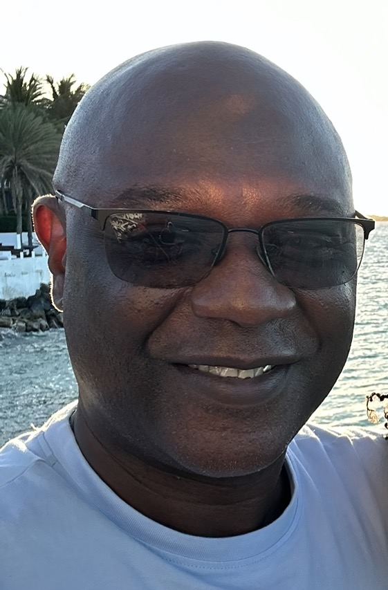

Neil Daley

Summary
I’m a .NET C# developer with 8 years of experience across
all phases of the Software Development Life Cycle,
from analysis and design to implementation and maintenance.
I’m proficient in using a variety of tools to deliver
applications that boost organizational productivity and
I’m focused on building reliable solutions and communicating
clearly throughout the development process.
Education
- Bachelor of Science, Information Technology - Daytona State College (2016-2018)
- Associate of Science, Programming & Systems Analysis - Daytona State College (2012-2014)
Professional Experience
Software Engineer - City of Palm Coast
January 2023 - Present
- Designed and implemented AWS infrastructure by creating services, task definitions,
and target groups across regions to enable scalable application deployment.
- Led the migration of a legacy website from .NET Framework to .NET Core.
- Designed and implemented an Account Search widget that provides
residents with real-time access to billing details across all accounts.
- Designed and implemented a rental registration page with Google Maps
integration and secure credit card payment processing.
- Designed and implemented a SQL stored procedure to produce the finance
department’s liens list.
- Led the modernization of the Economic Development website by designing Strapi
components and updating microservices, PostreSQL shcema, GraphQL layer, and .NET
application to support dynamic, CMS-driven content.
- Led and implemented a website ADA compliance initiative leveraging Monsido
to enhance accessibility and regulatory compliance.
- Designed and implemented an Archive page to segregate non-ADA-compliant
documents while maintaining accessibility standards.
- Database management.
- Managed and resolved service and incident tickets using the Halo ticketing
system.
- Managed updates to website security certifications to ensure compliance
and secure access.
- Published City of Palm Coats meeting video recordings and MP3 audio files
to support resident access and transparency.
- Streamlined and enhanced the Exit Interview process, incorporating automated
email notifications to the HR team for improved efficiency and accuracy.
Programmer II - Daytona State College
January 2020 - 2022
- Lead programmer for College Performance Funding – Institutional Research/State Reporting.
- Develop and maintain SQRs used in State Reporting (Continuous Integration).
- Develop documentation, IT Guides, User Guides, Migration Guides.
- Research Oracle documents and HUEG to assist in solving problems with delivered applications.
- Utilize SQL Server in command line and Management Studios.
- Develop PeopleSoft Applications used in Campus Solutions (CS).
- Perform upgrades/maintenance patches to PeopleSoft pillars for production and non-production environments.
- Maintain Campus Solutions applications (Continuous Delivery).
- Maintain documentation on projects.
- Provide technical support to end users (Service Requests).
Programmer I - Daytona State College
January 2019 - 2020
- Gain fundamental understanding of PeopleSoft Campus Solutions.
- Understanding PeopleCode in Application Design.
- Delivering Process Automations.
- Utilize SQL Server in command line and Management Studios.
Data Communications Specialist II - Daytona State college
January 2017 - 2019
- Perform software updates via WSUS (Windows Server Update Services)
- Perform software upgrades via SCCM (System Center Configuration Manager)
- Perform imaging or re-imaging of Windows OS for 200+ devices via SCCM
- Supervising and training interns, co-op, and work-study students
- Perform software upgrade training to faculty and Staff employees
Skills
- Programming Languages:
HTML, CSS, JavaScript, Bootstrap, .NET/NET Core, C#, T-SQL
- Software:
- Visual Studios, MS SQL Server, PostgreSQL
- MS Office Suite / O365
- Platforms:
- AWS Cloud infrastructure
- Azure DevOps CI/CD
- Docker
- SnapLogic (iPaaS)
- Strapi CMS (PaaS)
- Windows 10/11, Linux
License and certifications
- AWS Cloud Practitioner (2025)